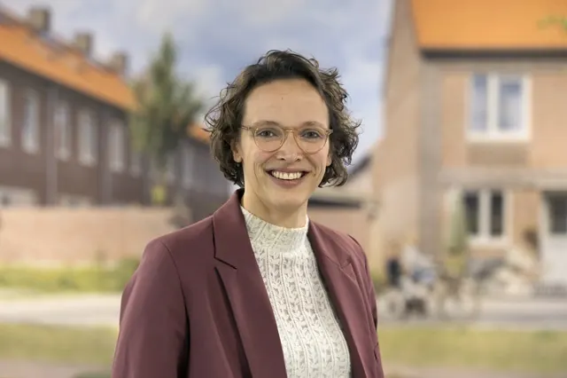

Nieuws ·
Nieuwe raad van bestuur voor Talis

Per 1 maart is Eefje Lentjes – de Bruin benoemd tot nieuwe bestuurder van Talis. Eefje werkt vijf jaar als controller bij Talis. Daarvoor werkte zij acht jaar bij accountantskantoor PwC. Samen met Ronald Leushuis zal zij de komende periode het tweehoofdige bestuur van Talis vormen. Met de invulling van de functie van de nieuwe bestuurder heeft Ronald aangegeven dat hij het een mooi moment vindt om vooruit te kijken. Na twaalf jaar Talis, waarvan 9,5 jaar als bestuurder wil hij graag ruimte maken voor een geheel nieuwe raad van bestuur aan het eind van het jaar.
Dorien de Wit, voorzitter van de raad van commissarissen van Talis: “Wij zijn blij dat Eefje start als bestuurder bij Talis. Talis is een corporatie met grote ambities. De opgaven op het gebied van woningbouw, verduurzaming en de inzet op leefbaarheid in wijken hebben invloed op het verdienmodel. Met Eefje hebben we niet alleen een bestuurder met stevige bagage op dat vlak, maar ook iemand met een scherp oog voor risico’s en kansen. Iemand die vanuit de visie van Talis meerwaarde kan bieden voor de bestaande en toekomstige huurders van Talis. De komende periode zal zij dit samen blijven doen met Ronald. Intussen starten we de werving voor een nieuwe voorzitter van de raad van bestuur”.
Eefje Lentjes – de Bruin (36 jaar):
“De afgelopen jaren heb ik een bijdrage mogen leveren om bij Talis vanuit verschillende perspectieven tot gewogen oordelen te komen. Hierbij denk ik graag in kansen en mogelijkheden in plaats van beperkingen. Dit past bij de organisatie Talis en hier wil ik mij graag verder voor inzetten. Talis is een mooie organisatie met professionele en bevlogen medewerkers. Een ondernemende organisatie met innovatiekracht, die zich samen met partners inzet voor het bieden van betaalbare woningen in wijken waar mensen met plezier kunnen wonen. Ik kijk ernaar uit om in mijn nieuwe rol als bestuurder hier mijn bijdrage aan te leveren. Vanuit mijn achtergrond neem ik ondernemerschap en lokale maatschappelijke betrokkenheid mee.” Eefje heeft een bedrijfseconomische achtergrond. Naast controller bij Talis is zij voorzitter van de Rekenkamer van de gemeente Renkum.
Ronald Leushuis:
“Ik kijk uit naar de samenwerking met Eefje als medebestuurder de komende maanden. De afgelopen jaren hebben we vanuit andere rollen al intensief samengewerkt en was zij betrokken bij veel belangrijke besluitvormingstrajecten. Ik ben ervan overtuigd dat Eefje een waardevolle bijdrage zal leveren aan de continuïteit en de toekomst van Talis. Dit geeft mij het vertrouwen om mij te beraden op een nieuwe stap in de nabije toekomst.”